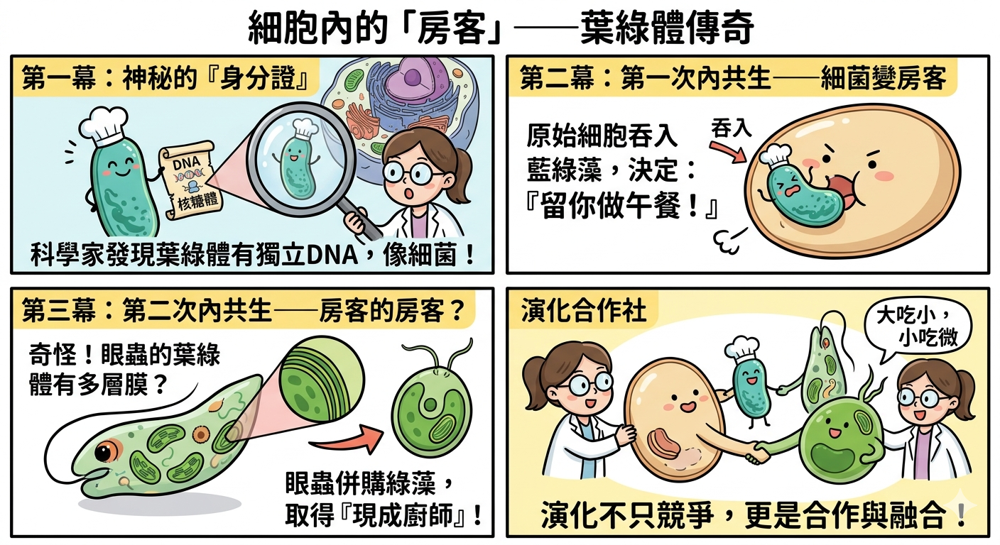

🌿 葉綠體傳奇
一場跨越億年的「併購案」
想像一下，如果你的肚子裡住著一個會下廚的廚師，只要曬曬太陽就能幫你做好午餐，你是不是就不用辛苦覓食了？在微觀的生物世界裡，這真的發生過！
科學家在觀察植物和藻類的葉綠體時，發現了一個驚人的秘密：葉綠體竟然擁有自己獨立的 DNA 和核糖體，且長得跟一種叫做「藍綠藻」的細菌非常像！這就像是在一個大房子（細胞）裡，發現一間鎖著門的小房間，裡面住的人竟然拿著外國護照。
生物學家馬古利斯（Lynn Margulis）因此提出了「內共生學說」：
在很久很久以前，一個巨大的原始真核細胞，張開大口吞下了一隻會光合作用的「藍綠藻」。神奇的是，大細胞沒有消化掉它，反而覺得：「嘿！留著你幫我製造食物也不錯！」於是，藍綠藻變成了長住的房客，最終演化成我們今天看到的葉綠體。
就在科學家以為解開謎題時，「眼蟲」出現了。眼蟲是一種很酷的原生生物，牠像動物一樣會游動，卻像植物一樣有葉綠體。
更奇怪的是，科學家發現眼蟲的葉綠體竟然有 3 到 4 層膜（一般的只有 2 層）！研究證實，眼蟲的祖先當年並不是吞下細菌，而是吞下了一整顆「已經擁有葉綠體的綠藻」。
這就像是一間大公司併購了一間小公司，而那間小公司原本就雇有一名廚師。這種「大吃小、小吃微」的現象，稱為「二次內共生」。這說明了生命的演化並非只是單純的競爭，更多時候是透過「合作」與「融合」來取得強大的生存技能。

⚠️ 準備好驗收你的閱讀成果了嗎？
證據搜尋（情節理解）
根據文本，科學家為什麼會懷疑葉綠體原本是「外來者」，而不是細胞自己長出來的構造？
全數通關！測驗完成！
要登錄完成狀態嗎？